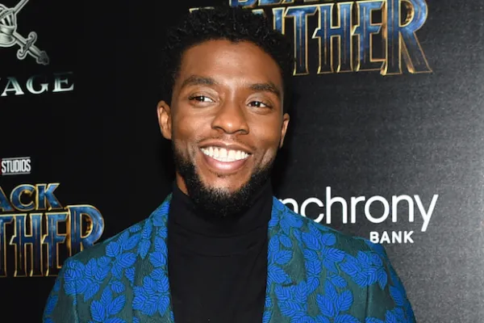
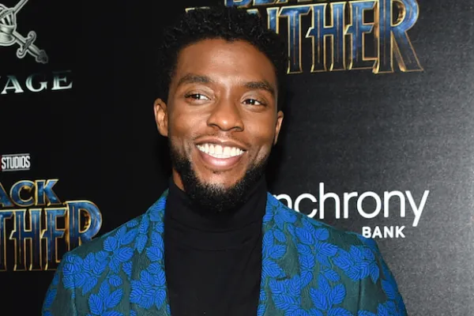
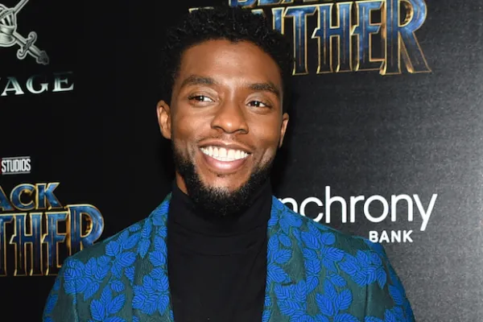

Gallery

 

Chadwick Aaron Boseman was born on November 29, 1976, in Anderson, South Carolina. He attended Howard University and began his career in theatre.
Boseman won a Drama League Directing Fellowship and an acting AUDELCO, along with receiving a Jeff Award nomination for his 2005 play Deep Azure. Transitioning to the screen, his first major role was as a series regular on the NBC drama Persons Unknown (2010) and he landed his breakthrough role as baseball player Jackie Robinson in 42 (2013). He continued to portray historical figures, starring as singer James Brown in Get on Up (2014) and as Thurgood Marshall in Marshall (2017).
In 2016, Boseman was diagnosed with colon cancer. He kept his condition private, continuing to act until his death in 2020 from the illness. His final film, Ma Rainey's Black Bottom, was released posthumously the same year to critical acclaim, earning him an Academy Award nomination for Best Actor and a Golden Globe Award for Best Actor – Motion Picture Drama.
